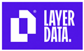

Profil
Étudiant en Science des Données, responsable et travailleur, j'aide les entreprises à mieux suivre leur activité. Je transforme les ventes, les stocks, les commandes ou les factures en tableaux de bord simples et utiles. Je m'investis dans mes projets et je les mène jusqu'à leur réalisation.
Expérience Professionnelle

Layer Data
Akbou, Algérie
Mission Data & BI — Client AGRANA Fruit
-
Données et Data Warehouse (ETL) : préparer, nettoyer et transformer les données avec Python.
-
Modèle de données : relier les informations dans Power BI pour les analyser facilement.
-
Tableaux de bord Power BI : suivre les commandes, les livraisons, les prévisions de vente et les reliquats.
-
Indicateurs clés (KPIs) : mettre en place des indicateurs pour suivre l'activité.
Mission développement web — SOGRAL (Gares routières d'Algérie)
-
Catalogue de locaux : concevoir et mettre en ligne une plateforme pour présenter les espaces disponibles.
-
Fiches et disponibilité : afficher les informations des locaux et leur statut.
-
Administration : permettre aux gestionnaires de mettre à jour les offres.
-
Maintenance & support : corriger, améliorer et suivre les performances du site.
Cyber Café Khatri Khelaf
El Kseur, Algérie
-
Suivre les recettes, les dépenses et les factures.
-
Entretenir les ordinateurs et aider les utilisateurs.
Projets
Outil pour concessionnaires et vendeurs automobiles
-
Créer un outil pour suivre les véhicules, les stocks, les ventes et les marges.
-
Gérer les clients et produire des devis et des factures.
Projet personnel
En autonomie
-
Créer un logiciel simple pour gérer les ventes et les factures.
-
Ajouter un tableau de bord pour suivre l'activité et le chiffre d'affaires.
Compétences & qualités
Compétences professionnelles
- Analyser des données
- Créer des tableaux de bord
- Développer des outils métier
- Suivre une activité
Qualités personnelles
- Curieux
- Persévérant
- Esprit d'adaptation
- Communication claire
Pourquoi me choisir ?
- Expérience concrète : déjà travaillé en entreprise sur des missions data et web.
- Sens des responsabilités : autonome, sérieux et capable de mener un projet jusqu'au bout.
- Esprit d'équipe : sociable, à l'écoute et motivé pour apprendre et progresser.
Compétences
Analyse de données
• Power BI, DAX, Power Query
• Python, Pandas, NumPy
• Indicateurs de suivi et analyse des résultats
Bases de Données
• SQL : requêtes et jointures
• Bases de données : MySQL, PostgreSQL, SQLite
• Outils : DBeaver, Microsoft Access
Développement Web & Outils
• Web : HTML, CSS, JavaScript, PHP
• Frameworks : React, Vite, Electron
• Applications : outils web et logiciels de gestion
Outils
• Excel : formules et tableaux de suivi
• Git, GitHub, GitLab
• Windows, Linux, dépannage informatique
Formation
BUT Science des Données
Parcours Science des données
IUT Clermont Auvergne (Aurillac)
09/2026 – En cours
BTS Informatique
★ Major de promotion
Informatique, bases de données et systèmes
Institut Int. de Management Béjaïa
10/2022 – 01/2026
Baccalauréat Mathématiques
Béjaïa, Algérie
2021
Langues
Français
Bilingue / Langue maternelle
Arabe
Bilingue / Langue maternelle
Anglais
Niveau B2
Centres d'intérêt
Basket-ball
Loisir
Formule 1
Passion